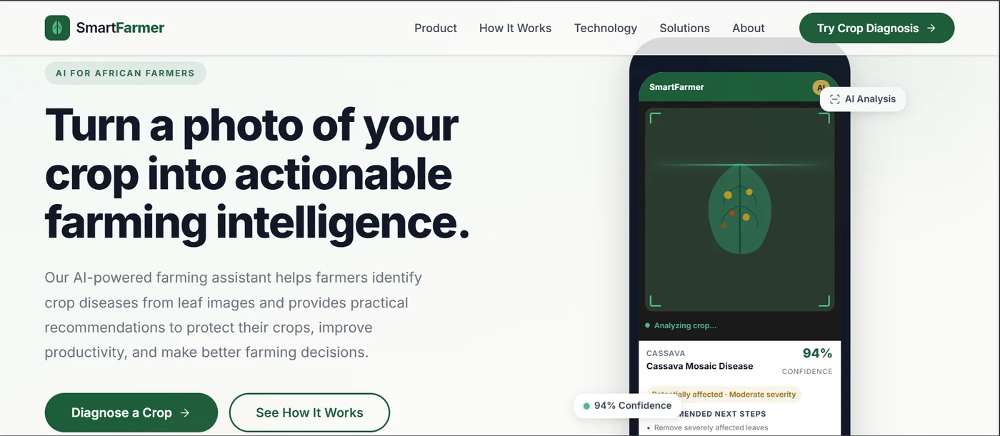

AI for African Farmers · Crop Disease Detection
SmartFarmer
Turn a photo of your crop into actionable farming intelligence. Point your camera at a leaf, and SmartFarmer tells you what is wrong, how badly, and what to do about it next.

// The Problem The Disease Is on the Leaf. The Answer Is Not.
A cassava plant can be dying from a disease the farmer has never heard of, and the first visible sign is a pattern on a single leaf. Plant disease does not wait for a clinic to open, and it does not announce itself. A farmer who cannot name what is attacking the crop cannot treat it, and a farmer who cannot treat it loses the harvest.
The people who know are rarely the people who need to know. A district agricultural officer covers hundreds of farmers across enormous distances, and a lab diagnosis takes days and costs money that most smallholders do not have. Meanwhile the extension advice that does exist is written in technical language, arrives too late in the season, and assumes a smartphone and a data bundle.
So the diagnosis gap is not a knowledge gap. It is a distance gap — between the diseased leaf and the person who would recognise it. SmartFarmer was built to close exactly that distance, in the time it takes to point a camera.
// The Payoff A Decision, Not Just a Label
Snap the Leaf
One photo of the affected leaf is enough. No forms, no account setup, no description to write — the crop is already in the frame.
A Diagnosis With a Confidence Score
A convolutional image classifier built in TensorFlow on a MobileNet backbone returns the disease and how sure it is — 94% confidence on Cassava Mosaic Disease, for example. A number you can reason about beats a bare verdict.
Severity, Not Just Disease
Knowing what the disease is only gets you halfway. SmartFarmer also grades how bad it is — reads like “generally affected, moderate severity” — so the farmer knows whether to act this week or this season.
Recommended Next Steps
The diagnosis comes with what to do about it, ranked and concrete: remove severely affected leaves, isolate the plant, treat, replant. The output is an action, not an anxiety.
Practical Recommendations, Plainly Stated
Protect the crop, improve productivity, make the next planting decision with better information. Recommendations written for a farmer to act on, not for an agronomist to admire.
Built for the Reality on the Ground
Designed for African farmers first — a leaf in harsh daylight, a phone with modest specs, a user who wants an answer, not a dashboard. The interface stays out of the way of the answer.
// How It Works From Leaf to Decision in Four Moves
Capture
Frame the affected leaf and take the photo. Keep the leaf flat and fill the frame — that is the whole of the input.
Analyse
The image goes to a convolutional image classifier trained in TensorFlow on a MobileNet backbone, which returns its ranked predictions over crop diseases.
Diagnose
You get the disease, the confidence behind it, and how severe the damage looks — the full read, not just the name.
Act
Recommended next steps follow immediately: what to remove, what to isolate, what to treat. Take the action and the season is still yours.
// Who It's For Anyone Who Grows Something and Cannot Afford to Guess
One Photo Between a Farmer and an Answer
SmartFarmer is live. Open it, try it on a leaf, and see what a confidence score and a severity grade actually feel like when the season is on the line. Built with TensorFlow and a MobileNet image classifier.